01Linux 在项目里做什么？
Linux 是两台虚拟机使用的操作系统。它管理 CPU、内存、文件和网络，让 Nginx、容器运行工具和 Kubernetes 组件能够在机器上工作。网页需要读取文件、处理请求和发送结果，这些操作都要使用 Linux 提供的能力。
假设你写好一个网页，里面有一句“欢迎访问我的网站”。你希望朋友打开浏览器就能看到它。后来，你还希望程序出问题时有人自动处理，访问人数增加时能够运行更多实例。
围绕这个网页，我们逐步认识 Linux、Docker、Kubernetes 和 Prometheus。学到 Volcano 时，再换成一个需要四个计算进程共同完成的任务，看看集群怎样给它安排资源。
网页部分结合所附 Linux 笔记与 Nginx 监控项目代码；Volcano 部分结合官方资料和计算任务例子。
顺着正文阅读，图片下面有对应解释。手机可以横向查看图解，也可以单独打开图片。
没有找到匹配内容，请调整关键词。
先把网页保存成一个文件，名字叫 index.html。在自己的电脑上双击它，浏览器就能显示里面的内容。这个时候，你看到的是自己电脑上的文件。
朋友在另一台电脑上，没有你的这份文件。要让朋友通过网络访问，需要有一台机器一直运行一个程序：收到网页请求，就把文件内容发送过去。这个项目选择的程序叫 Nginx。
Nginx 要读取磁盘上的文件，需要内存保存正在处理的数据，需要 CPU 执行操作，还需要通过网络发送结果。这些事情都离不开操作系统。Linux 就是一种操作系统，负责管理机器资源，并向程序提供使用这些资源的方法。
你平时可能使用 Windows 或 macOS，通过图标和窗口操作电脑。学习这个项目时，许多操作通过命令完成，例如启动程序、查看文件、查看日志。命令是告诉系统做事的一种方式。
持续向其他电脑提供网页的机器，可以称为网页服务器。项目在自己的电脑中创建了两台虚拟机，再分别安装 Linux。虚拟机可以理解为电脑中模拟出来的另一台计算机，有自己的系统、内存分配和网络设置。
想想手机里的音乐软件。已经安装，表示文件保存在设备里；打开以后，它才开始工作。Nginx 也一样。安装时保存下来的可执行文件称为程序，启动以后正在执行的那一次运行称为进程。
Linux 会给进程分配编号，叫 PID。查看进程时，可以通过编号找到具体是哪一次运行。Nginx 持续等待别人请求网页，这种长期提供功能的运行方式通常称为服务。
图中的“启动”连接了两个状态：启动前是磁盘上的文件，启动后是正在工作的进程。浏览器请求到来时，负责读取网页、发送内容的是这个进程。
在直接安装 Nginx 的 Linux 机器上，通常可以让 systemd 管理服务。你告诉 systemd 启动 Nginx，它按照配置执行启动操作；你查看服务状态，就能知道服务是否处于运行状态。
“现在启动”只决定当前这次运行。“开机自动启动”决定以后启动机器时，系统是否按配置启动服务。因此，今天可以访问网页，重启电脑以后仍然可能需要检查服务是否自动运行。
Linux 使用用户身份和文件权限控制访问。假设你用自己的账户把网页放进了个人目录，设置成只有自己能够读取。Nginx 使用另一个用户身份运行，就可能无法读取这个文件。
理解权限时，先确定实际执行操作的用户。你自己可以打开文件，说明你的账户可以读取；浏览器请求时读取文件的是 Nginx，需要检查它的运行用户有没有访问目录和读取文件的权限。
沿着网页的过程理解：Linux 保存网页文件，启动 Nginx 进程，并提供文件读取和网络通信能力。Nginx 按照配置找到网页，把内容返回给浏览器。Linux 与 Nginx 各自承担其中一部分工作。
Linux 是两台虚拟机使用的操作系统。它管理 CPU、内存、文件和网络，让 Nginx、容器运行工具和 Kubernetes 组件能够在机器上工作。网页需要读取文件、处理请求和发送结果，这些操作都要使用 Linux 提供的能力。
程序是保存在磁盘上的可执行内容，进程是程序启动后的一次运行。Nginx 进程持续等待并处理网页请求，提供网页服务。查看文件、查看进程和查看服务状态，分别是在检查不同条件。
可能使用了错误的文件路径，也可能运行 Nginx 的用户没有访问目录或读取文件的权限。需要查看错误日志里的具体提示，再检查配置路径和实际运行身份的权限。
所附 Linux 笔记：第 108–109、140–143 页。这里讲述直接在 Linux 上运行程序的过程；第五课会接着解释容器运行方式。
网页能够访问以后，另一个问题出现了：朋友说打开页面要等待很久。要理解“慢”，需要先知道处理一个请求时，机器在做哪些事情。
磁盘用来保存文件，网页和 Nginx 程序都可以保存在其中，正常关机后文件仍然存在。内存用来保存程序正在使用的内容，例如正在处理的请求数据；普通内存中的内容不会在断电后继续保留。CPU按照程序指令执行计算和操作。
可以借用做饭理解这三个角色：柜子保存食材，桌面放正在处理的食材，做饭的人完成操作。这个比喻帮助记住“保存、临时使用、执行操作”的分工。计算机中还会有缓存等机制，实际访问同一个网页时，文件也可能已经在内存中。
网络负责把请求送进来，再把网页内容送出去。假如网络传输很慢，即使程序处理得很快，访问者仍然需要等待。
假设网页同时有更多人访问，Nginx 要处理的工作增加，CPU 使用量可能随之上升。如果响应仍然很快、错误没有增加，这可能是机器正在正常完成更多工作。
如果 CPU 持续忙碌，网页也明显变慢，就需要找到使用 CPU 的具体进程，并确认它在做什么。内存紧张时，要找出主要使用者；磁盘空间不足时，要找到占用空间的文件。不同原因需要不同处理。
容器和 Kubernetes 也会限制应用可使用的资源。即使机器还有剩余内存，某个容器超过自己的内存限制，仍可能被系统终止。后面看到“容器反复重新启动”时，就可以把这个现象与资源限制联系起来。
程序可以把发生的事情写成日志。例如 Nginx 的访问日志记录有人请求了哪个页面以及处理结果；错误日志可能记录“找不到文件”或“权限不足”。这些记录可以帮助还原当时的情况。
假设朋友说十点零五分访问失败，你查看凌晨的日志通常没有帮助。应该找到十点零五分附近、对应服务的记录，再与朋友看到的结果一起判断。
一个有因果关系的例子：日志文件持续增长，把磁盘空间占满；程序无法继续写入需要的文件，出现错误。检查时看到了磁盘已满，也找到了占用空间的日志。处理日志保存方式并释放空间后，再验证程序能否正常工作。
日志需要按要求保存历史并清理过旧内容。重要业务数据还需要备份。保存了备份以后，应实际验证能否恢复，才能确认数据在需要时可以取回。
处理网页会使用 CPU、内存、磁盘和网络，任何一个环节出现等待，都可能影响访问速度。需要结合故障时间，检查具体进程、资源变化和日志，找到受到影响的环节。
它说明测量期间 CPU 很忙。是否需要处理，还要看哪个进程在使用、当时请求是否增加，以及网页响应是否变慢或出错。数值和用户实际感受需要一起判断。
先确定发生问题的服务和时间，再寻找相应记录。日志中的文件路径、错误原因和请求结果，可以指导下一步检查。处理后还要重测原来的操作，确认程序真正恢复。
所附 Linux 笔记：第 89–103、346–358、1430–1433 页，涉及存储、日志和容器资源问题。
现在 Nginx 已经运行，网页文件也能够读取。朋友还需要知道向哪台机器发送请求。可以先看一个学习用地址：http://192.168.121.11:80/index.html。
192.168.121.11 是这里假设的服务器 IP 地址，用来找到网络中的目标位置。它属于私有网络地址，访问者需要处于可以到达该网络的环境。80 是端口，用来区分这台机器上的通信入口。
一台机器可能同时运行网页程序和远程管理程序。请求到达同一台机器以后，还要通过端口找到对应服务。Nginx 在这里等待 80 端口上的连接，这个等待状态称为监听端口。
/index.html 告诉网页服务想要哪个内容。http 则说明按照 HTTP 这种通信规则发送请求和读取响应。每个部分都对应访问过程中的一个要求。
人更容易记住名称，所以可以给网站使用域名。浏览器需要先查出域名对应的地址，这项查询由 DNS 完成。取得地址以后，浏览器才能继续连接目标服务。直接输入 IP 时，可以省去这次域名查询。
浏览器发送请求，表达“我想取得这个页面”。Nginx 根据请求找到内容，返回响应。响应包含处理结果，例如成功或找不到页面，也包含需要返回的网页内容。浏览器收到 HTML 后，把文字和结构显示成页面。
HTTPS 在这类网页通信中增加了加密和身份验证机制。浏览器会检查服务提供的证书，并在建立受保护的连接后交换内容。
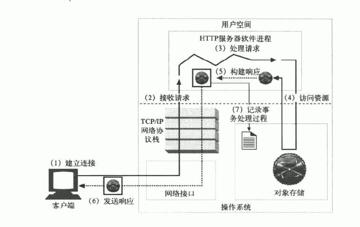
先找浏览器与网页服务，再看请求往哪里发送、响应从哪里返回。把请求理解成“访问者想取得内容”，把响应理解成“服务处理后的回答”，就能跟上图中的过程。
请求需要经过多个条件：地址正确、网络允许连接、端口有程序监听、程序能够读取文件。某个条件满足，只能说明对应步骤已经成功。
两种具体结果：浏览器一直等待后提示超时，可以继续检查地址、网络和端口。浏览器已经收到 404，说明某个 HTTP 服务回答了请求，但没有找到请求的内容；接下来需要核对访问的服务、页面路径和文件。
IP 用来确定网络位置，端口区分机器上的通信入口。使用域名时，DNS 帮助查询对应地址。取得地址以后，浏览器再连接端口，向真正运行的程序发送请求。
浏览器先取得目标地址，连接网页服务的端口，再发送请求。Nginx 读取对应内容并返回响应，浏览器根据返回的 HTML 显示页面。使用域名时，取得地址通常需要 DNS 查询。
超时需要确定连接和请求停在哪一步，检查网络、入口和程序状态。收到 404 表示某个网页服务已经回答请求，需要核对是否访问了正确服务，以及该服务中的页面路径和文件。
所附 Linux 笔记：第 134、218–232、303–319 页。项目通过集群端口访问网页的过程，见第六课。
接着上一课，浏览器已经把请求发送过来了。Nginx 要根据配置，决定去哪里取得内容。对于项目中的演示网页，这个过程很直接：找到保存的 HTML 文件，读取内容，再返回给浏览器。
假设文件里写着“欢迎访问我的网站”，张三访问时看到这句话，李四访问时也看到这句话。网页内容已经写在文件里，Nginx 可以直接读取。这类内容通常称为静态内容，常见的还有图片和样式文件。
如果修改了这个文件，网页内容就会改变。“静态”描述的是提供内容的方式。项目选择这种网页，方便检查应用是否成功部署：浏览器有没有取得我们预期的那段文字，很容易确认。
订单需要根据当前用户查询，结果无法提前为所有人写成同一个固定文件。通常由后面的业务程序处理：验证用户、查询数据、生成结果。负责这些工作的程序，叫后端应用。
Nginx 可以先接收浏览器请求，按照配置把请求转交给后端应用，等后端返回结果以后，再把结果交给浏览器。这个中间转交的角色叫反向代理。
沿着其中一条路径阅读。文件路径里，内容来自网页文件；后端路径里，内容来自处理请求的业务程序。两种情况下，浏览器都会收到 Nginx 返回的响应。
假设后端应用 A 和 B 都能查询订单，Nginx 可以根据配置，把一些请求交给 A，把另一些请求交给 B。将请求分配给多个实例的工作叫负载均衡。
“实例”表示实际运行起来的一份应用。两个实例可以分担工作，也提供了处理部分实例故障的基础。要让故障时的请求继续成功，还需要正确的健康检查、分配策略和可用资源。
Nginx 常用 master 和 worker 分工。master 负责读取配置和管理工作进程，worker 实际接收、处理请求。因此，一个 Nginx 服务可能包含多个进程，进程数量需要结合具体程序结构理解。
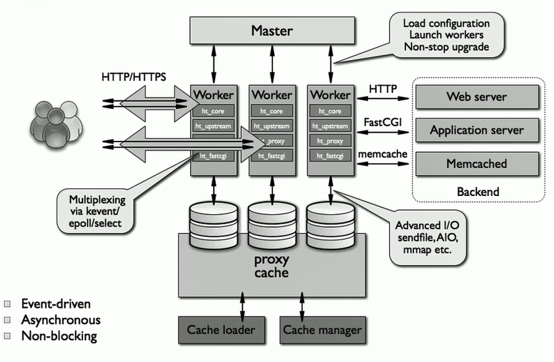
先找到 master，再找到 worker。把 master 理解成负责管理工作进程的部分，把 worker 理解成处理请求的部分。图里的其他细节可以在需要研究性能时继续阅读。
回到这个网页：Nginx 已经运行、配置指向正确目录、网页可以读取，浏览器就有机会取得页面。接下来要解决的是：换一台机器时，怎样方便地准备相同的程序和网页文件。
它接收浏览器的网页请求，读取镜像中准备好的 HTML 文件，再把内容返回。项目用这个简单网页验证部署和访问过程，也可以通过修改网页内容检查版本更新是否生效。
浏览器先把请求发送给 Nginx，Nginx 根据配置转交给后端应用。后端完成处理后，Nginx 再把结果返回浏览器。可以用查询订单这个例子，解释为什么需要后面的业务程序。
多个实例可以提供相同功能，入口根据配置把不同请求分配给它们，让工作得到分担。某个实例发生故障时，还需要检查入口能否避开它，以及剩余实例是否有能力处理请求。
所附 Linux 笔记：第 423–425、482 页。项目网页位于仓库的 site 目录。
你已经安装 Nginx、放好网页，朋友也能访问了。现在想换一台服务器。你要再次安装合适版本的 Nginx，复制文件，检查配置。如果漏了某个步骤，新机器上的结果就可能不同。
应用复杂以后，这个问题更明显。一个 Python 程序可能要求特定版本的 Python 和好几个依赖库。只把代码复制过去，另一台机器仍然可能缺少运行条件。
我们可以把程序、依赖文件、默认配置和启动说明准备成一份标准内容。这份内容叫容器镜像。机器取得镜像以后，就有了创建应用运行环境的依据。
Docker 是常用的容器工具，能够构建镜像、下载镜像，以及创建和管理容器。你写 docker 命令，是在向 Docker 发出请求；Docker Engine 负责管理实际的镜像和容器操作。
镜像文件里有哪些内容，需要由构建过程决定。项目的 Dockerfile 就是构建说明：以已经准备好 Nginx 的基础镜像为起点，把 site/index.html 放进 Nginx 提供网页的目录。
镜像准备好以后，还需要启动应用。从镜像创建并运行起来的那一份环境，叫容器。里面的 Nginx 进程会使用 CPU、内存和网络，真正处理请求。
可以把镜像理解成准备好的模板。使用同一份模板，可以启动容器 A，也可以启动容器 B。两者具有相同的初始应用文件，但各自有运行状态；停止 A，B 可以继续运行。
先看“构建镜像”需要什么，再看两个“启动容器”的箭头。镜像本身不会处理网页请求；容器中的 Nginx 进程启动以后，才开始接收请求。
Linux 容器中的程序依然是运行中的进程。Linux 为它提供相对独立的文件、进程和网络视图，并可以限制它使用多少资源。于是，不同容器能分别看到自己的环境，又共同使用所在机器的 Linux 内核。
“内核”可以先理解为操作系统中直接管理硬件与基础资源的核心部分。Linux 虚拟机有自己的 Linux 内核，同一台 Linux 机器上的普通 Linux 容器共享这台机器的内核。
在 Windows 或 macOS 上使用 Docker Desktop 运行 Linux 容器时，通常会有 Linux 虚拟机提供运行环境。移动镜像也需要满足处理器类型等兼容条件，还要准备数据、网络和设备权限。
容器有自己的网络环境。假设 Nginx 在容器内部使用 80 端口，可以把所在机器的 8080 端口转交到容器的 80 端口。这样访问机器的 8080，就能到达容器里的 Nginx。
这叫端口映射。要分别说清楚“外面访问哪个端口”和“程序内部监听哪个端口”。第六课的 Kubernetes 也要解决外部请求怎样进入容器的问题。
把镜像上传到镜像仓库，其他机器就可以下载。上传通常称为 push，下载通常称为 pull。Docker Hub 和项目使用的 GHCR 都可以保存镜像。给镜像标记版本，有助于确认某次部署使用了什么内容。
假设镜像 v1 里的网页写着“欢迎访问”，后来改成“项目演示”。只修改电脑中的文件，已经运行的容器不会自动得到新网页。常用发布过程是构建 v2，再用 v2 创建新的容器。
网页本来就在镜像里，可以重新取得。用户上传的文件、数据库内容、训练结果等，是运行过程中新增的数据。如果只写在容器自己的可写空间，删除容器时会失去这部分空间。
需要长期保存的数据，应安排在能够独立保留的存储位置，再让容器使用它。这种让数据在实例被替换后继续存在的安排，叫数据持久化。
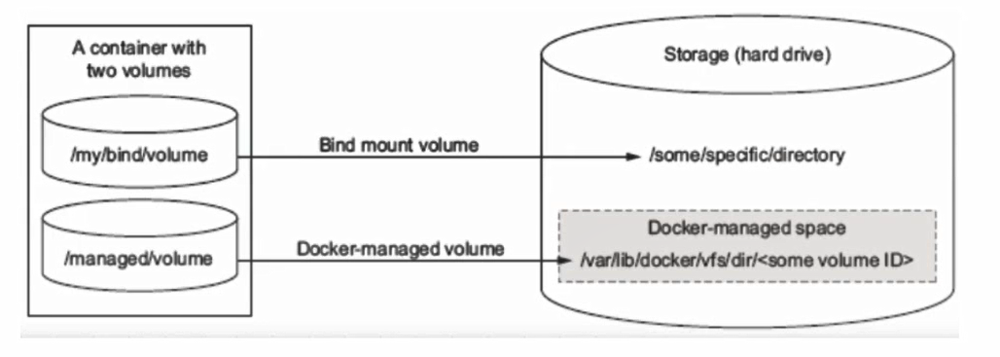
把容器和存储位置分别找出来。思考容器被删除以后，哪部分数据还能留下，新容器怎样继续读取它。学习 Kubernetes 保存监控数据、Volcano 保存计算结果时，也会遇到这个需求。
Docker 是构建和管理容器应用的工具。镜像保存应用文件、依赖和启动所需的信息；容器是从镜像创建出来的运行环境，里面的进程实际执行工作。同一镜像可以创建多个容器。
它说明使用哪份 Nginx 基础镜像，并把项目网页复制到 Nginx 提供内容的目录。构建后得到包含网页的新镜像，再使用这个镜像运行容器，才能提供项目自己的页面。
网页代码可以通过构建新镜像、替换容器完成更新。运行期间新增的重要数据需要放在独立保留的存储中，否则删除旧容器时可能丢失。代码发布与数据保存各自有对应的处理过程。
所附 Linux 笔记：第 1134、1173–1188、1220–1256、1277–1278 页。镜像与容器概念同时参考 Docker 官方说明。
使用容器以后，复制运行环境方便多了。接着，你想长期运行两个 Nginx。如果一个意外退出，需要有人发现并恢复；如果一台机器资源不足，需要知道还有哪台机器可以使用；发布新网页时，还要替换旧实例。
机器和应用变多以后，这些持续检查与安排的工作可以交给 Kubernetes。它经常写作 K8s，两个名称指同一个系统。
接受同一套管理的一组机器叫集群，其中每台机器叫节点。节点可以是真实服务器，也可以是虚拟机。项目使用一台控制平面虚拟机和一台工作节点虚拟机。
控制平面负责保存配置、观察状态、作出安排。工作节点提供 CPU、内存等资源，实际运行应用。控制平面节点也可以根据设置运行应用，项目实验里记录了这种安排。
Kubernetes 安排应用时，以 Pod 为基本单位。Pod 可以包含一个或多个紧密配合的容器，同一个 Pod 中的容器被安排在同一节点上，并共享网络等运行条件。
项目每个 Pod 里运行一个 Nginx 容器。因此，想运行两个 Nginx 实例，就创建两个这样的 Pod。一个 Pod 可以有多个容器，但在这个例子里，先记住“一个 Pod 里面放一个 Nginx 容器”就能跟上后面的过程。
你可以在 Deployment 中写明：使用哪份镜像，运行两个副本。“副本”表示同一个应用的多个运行实例。这里的“两个”是你希望保持的数量。
Kubernetes 会持续检查实际情况。要求两个，实际只有一个，就尝试创建另一个；改成要求三个，就尝试增加一个。图中的 ReplicaSet 协助维持 Pod 数量，Deployment 还负责组织应用版本更新。
假设 Pod A 被删除，原来两个只剩一个。负责维持数量的控制器发现差额，创建新的 Pod C。C 有自己的身份和地址，并根据镜像重新启动 Nginx。这个过程就是项目中可以验证的一种自动恢复。
新 Pod 创建出来以后，调度器查看它需要的资源和运行条件，选择合适节点。这个选择过程叫调度。目标节点上的 kubelet 负责落实 Pod 的运行要求，再由容器运行工具完成具体容器操作。
这里可以记住几个名称与工作：API Server 接收管理请求；etcd 保存集群配置和状态数据；控制器持续检查要求与实际情况；Scheduler 选择节点；kubelet 在节点上执行运行管理。它们共同组成 Kubernetes 的管理过程。
项目节点上使用 containerd 运行容器。前一课学的 Docker 可以构建兼容镜像，Kubernetes 节点再通过 containerd 使用镜像。镜像构建工具与节点上执行容器的工具，各自承担一部分工作。
项目还使用 kubeadm 帮助建立集群，使用 Flannel 提供 Pod 之间的网络通信，使用 kubectl 向 Kubernetes 发出查看和管理请求。阅读仓库时，可以把这些名称放回各自的操作中理解。
如果直接把 Pod A 的地址告诉朋友，A 被替换后，这个地址就可能失效。所以还需要一个能够持续使用的访问入口，叫 Service。
Service 按配置找到属于这个应用的 Pod，把请求交给符合条件的实例。例如给 Nginx Pod 设置相同的标签，Service 就可以按标签选择它们。标签可以理解为附在对象上的分类信息。
朋友访问的是节点地址加 31258。这个 NodePort 入口将请求转交到 Service 对应的 Nginx Pod，最后到达容器的 80 端口。Service 在这里表示 Kubernetes 的一种资源对象；它负责组织访问入口与后面的实例。
NodePort 是 Service 的一种访问类型。项目的自动部署配置还使用过 31259，实际访问时要核对本次部署设置。入口能够使用，也需要机器网络和访问规则允许请求到达。
有些程序启动以后，还要加载配置或连接数据库。就绪检查 Readiness用来判断实例是否准备好接收请求。项目让它尝试请求 Nginx 网页，检查通过以后才把该实例作为正常接收请求的后端。
存活检查 Liveness用来发现运行过程中已经无法正常工作的容器，持续失败可以触发重新启动。检查条件需要符合应用特点，否则启动较慢的程序也可能被错误地反复重新启动。
调度需要知道应用申请多少资源。配置里的 requests 表示安排运行时需要考虑的资源需求；limits 设置运行时资源使用上限。CPU 达到上限时可能受到限制，内存超出限制时可能被终止。
把恢复过程想完整：要求两个实例，其中一个消失，控制器尝试补充。但如果没有合适节点、镜像无法下载或程序配置错误，新实例仍然可能启动失败。因此需要继续查看具体状态和事件。
两个副本也可能恰好运行在同一机器上。要应对整台机器故障，还要考虑实例分布和其他机器是否有足够资源。项目采用单控制平面的学习环境，能够练习应用恢复，整体可用性仍然受控制平面、网络和存储条件影响。
Deployment 描述应用镜像、副本数量和更新要求，Kubernetes 据此管理 Pod。Pod 是安排运行的基本单位，里面包含实际执行工作的容器。项目每个 Pod 里运行一个 Nginx 容器，期望保持两个副本。
控制器发现实际副本数量不足，就创建新的 Pod。调度器选择符合条件的节点，节点上的 kubelet 和 containerd 完成容器运行管理。新实例准备好以后，才能按 Service 配置接收请求。
Pod 地址可能随着替换改变，Service 根据配置关联当前符合条件的 Pod。访问者使用 Service 提供的入口，请求再被转交给准备好的实例。项目通过 NodePort 把这个入口提供给集群外的访问者。
项目依据：基础部署文件、Helm 部署模板、架构说明与完整部署过程。Kubernetes 组件和容器运行方式参考官方文档。
现在集群里运行两个 Nginx。你早上打开网页，一切正常。朋友却说凌晨曾经打不开。只查看现在的状态，很难知道凌晨有几个实例、机器是否很忙、容器是否重新启动过。
如果有人一直定时记录这些数据，第二天就可以回头查看。Prometheus，中文常称“普罗米修斯”，承担的正是采集和保存监控数值的工作，还可以根据这些数据判断是否需要告警。
可用实例有几个、内存用了多少、累计处理多少请求，都可以用数值表示。这些用来观察运行情况的数值叫指标。
假设在一个讲解例子里，十点记录到两个可用实例，十点零一分只有一个，十点零二分又变成两个。把同一对象的数值按时间排列，就得到时间序列。它说明数量什么时候发生变化。
| 时间 | Nginx 可用实例数 | 从数据能看见什么 |
|---|---|---|
| 10:00 | 2 | 这个时刻有两个可用实例。 |
| 10:01 | 1 | 这个时刻可用数量减少。 |
| 10:02 | 2 | 这个时刻数量恢复到两个。 |
表中数值用于解释时间序列。实际项目需要从自己的监控记录确认变化。
集群里可能有多个应用，所以数据还需要带上“属于哪个应用、哪个节点”等信息。这些分类信息叫标签 Label。查询时按照标签选择对象，就能避免把不同应用的数值混在一起。
需要有一个地方先提供这个数值。例如 node-exporter 在节点上读取资源信息，再提供一个能够返回指标的 HTTP 接口。这个接口也有地址和端口，常用的请求路径叫 /metrics。
Prometheus 按采集配置，隔一段时间请求这个接口，取得数值并保存。主动去取得数据的方式叫拉取 Pull。采集间隔需要配置，例如设成每隔十五秒进行一次；不同环境可以使用不同间隔。
如果需要知道 Deployment 要求几个副本、实际几个可用，则需要读取 Kubernetes 对象状态。项目使用的 kube-state-metrics 可以把这类信息提供成指标。它和 node-exporter 观察的对象不同，各自提供一部分数据。
重点看 Prometheus 发出的请求箭头，以及接口返回数值的箭头。Grafana 再向 Prometheus 查询数据。网页访问和指标采集是两类请求，各自需要检查是否成功。
可以按刚才的过程检查：采集组件是否提供指标？Prometheus 是否知道它的地址？网络是否允许访问？查询时是否选择了正确应用和时间范围？其中一步没有成立，图表就可能为空。
Prometheus 的 Targets 页面可以查看采集目标。目标显示 UP，说明最近一次指标采集成功。它能证明采集接口可以取得数据；网页能否正常打开，还需要检查应用状态或实际发起网页请求。
项目里还有 Metrics Server，用于提供近期资源数据，支持 kubectl 查看当前资源使用等功能。Prometheus 另外承担保存历史、查询变化和计算告警条件的工作。
Grafana 连接 Prometheus 这个数据来源，询问“这一小时内，某个节点的内存使用量是多少”，再把结果画成曲线。你选择面板里的时间范围，就是在改变要查询哪段记录。
读图时，先确认对象是谁，再看横轴表示哪个时间，纵轴表示什么数值和单位。例如百分比与内存字节数的含义不同，节点整体数据与单个容器数据也需要分别理解。
指标本身也有不同类型。“当前可用实例数”可以增加或减少，属于 Gauge；“累计请求数”会随着请求增加，通常使用 Counter。Counter 在程序重新启动时可能从较小值重新计数。要知道最近请求有多快地增加，需要查询一段时间里的变化。
Prometheus 用 PromQL 表达查询要求，可以选择指标、筛选标签，也可以计算某个时间范围内的变化。面试时先解释你想观察什么，再说明查询从哪些数据得出结果。
你可以设置条件，例如“应用持续五分钟没有可用实例”。Prometheus 持续检查对应指标；条件满足规定时间后，就产生告警。这里等待一段时间，可以避免短暂变化反复触发通知。
Alertmanager 接收告警，按配置进行分组、去重，再通过指定渠道通知使用者。通知渠道需要配置，规则生效以后也需要验证消息是否实际收到。
项目里的具体规则：仓库准备了 Nginx 可用副本少于一个、持续五分钟的告警样例。两个变成一个时，可以在监控里看见数量下降；下降到零并持续满足规则条件时，才会触发这条规则。
要验证完整过程，需要确认规则被 Prometheus 读取、数据能够采集、告警状态变化，以及通知到达。这些检查都应以实际结果为准。
Prometheus 的历史数据也需要存储。如果容器被替换就丢失历史，就无法回看凌晨的情况，因此监控部署还需要安排数据保存。观察 GPU 使用率时，也要增加相应的 GPU 指标来源；节点内存指标无法直接说明 GPU 在做多少计算。
采集组件或应用提供指标接口，Prometheus 根据配置定期请求，取得数值后按时间保存。之后可以查询历史变化，也可以计算告警条件。Grafana 查询这些记录，将它们显示成图表。
它说明对应目标最近一次指标采集成功。还需要看采到的指标是否反映应用正常，以及真实网页请求是否成功。检查时要知道采集目标提供的究竟是哪一类数据。
Prometheus 采集和保存指标，并检查告警条件；Grafana 查询数据并显示图表；Alertmanager 接收告警并按配置发送通知。要确认监控有效，需要分别验证数据、显示和通知过程。
项目监控目录、告警样例和监控部署说明；Prometheus 官方介绍、数据类型、告警与 Alertmanager 文档。
接下来换一个应用：训练程序由四个工作进程协作完成，每个进程使用一块 GPU，四个进程需要互相通信。GPU 可以先理解为适合进行大量并行计算的处理设备，训练程序经常用它加快计算。
把每个工作进程放进一个 Pod，就得到四个需要一起安排的 Pod。这与前面的网页例子不同：单个 Nginx 实例准备好后，可以自己处理一个网页请求；这个训练任务需要四个成员配合，缺少成员时可能一直等待。
假设任务 A 和任务 B 各需要四块 GPU，集群总共只有四块可用 GPU。如果调度策略没有考虑整个任务的成员关系，可能给 A 安排两个 Pod，再给 B 安排两个 Pod。
资源都被占用了，两项任务却都缺少另两个成员，只能互相等待。这个例子说明：对这类程序，安排单个 Pod 时，还需要考虑同一任务至少要有多少成员才能开始。
Volcano 是运行在 Kubernetes 环境中的批量计算调度与任务管理系统。它认识任务之间的组织关系，可以按照成组条件、队列和优先级安排资源。
刚才的训练要求四个成员都参与，就可以把最低需要的成员数量设置成四。资源条件不足时，先等待；满足这组成员的调度条件以后，再进行成组安排。这种机制称为Gang Scheduling，成组调度。
图里的“四”来自任务的成员要求。它表示这一组需要多少 Pod；每个 Pod 再申请一块 GPU，才得出四块 GPU 的需求。实际还要同时满足 CPU、内存、设备与节点条件。
成组安排关注的是资源与成员条件。各个容器启动、下载镜像和完成初始化仍然需要时间，训练程序也要正确处理成员间通信。
一个有明确计算目标、完成后可以结束的工作，通常称为作业 Job。Volcano Job 用来描述整项任务。例如使用什么训练镜像、运行四个 worker、每个 worker 需要多少资源，以及失败后采用什么处理方式。
这里的 worker 表示训练任务中的工作成员。它运行在 Pod 中，Pod 又运行在 Kubernetes 节点上。“训练 worker”和“工作节点”分别描述程序角色与机器角色。
| 名称 | 在四成员训练中的含义 |
|---|---|
| Volcano Job | 描述整项训练及其成员、镜像、资源和处理要求。 |
| Task | 描述同一类任务，例如 worker 这类成员，并规定要运行几份。 |
| PodGroup | 让调度器知道哪些 Pod 属于同一组，以及最低成员和资源要求。 |
| Queue | 把任务归入某个队列，按该队列的资源和调度规则安排。 |
使用 Volcano Job 时，控制器可以自动创建对应的 PodGroup。Job 中的 minAvailable 表达最低成员要求，PodGroup 中常见的对应字段叫 minMember。需要多少 GPU，则由各个 Pod 的资源申请共同决定。
可以把不同团队或不同用途的任务放进不同队列。管理员设置队列可使用的资源范围和共享规则，任务再按照相应策略获得资源。队列帮助解决的是一组任务怎样参与资源分配。
优先级可以表达哪些任务更紧急。某些配置还允许资源借用、归还或抢占：一个队列暂时空闲时，其他队列使用部分资源；原队列需要资源时，再按策略处理。
这些行为由实际启用的策略与队列配置决定。只看到“有队列”，还需要继续检查它的资源上限、当前使用情况和调度事件，才能解释为什么某个任务在等待。
可以沿着过程查看：任务已接受但在等待，称为 Pending；成员开始运行后，查看实际运行数量和日志；计算结束后，查看退出结果和输出文件。状态说明任务进行到哪里，日志说明程序内部经历了什么。
任务一直 Pending，先查看队列是否允许使用、最低成员需要多少资源、哪些节点符合条件，以及事件里给出的原因。总共还有几块 GPU，也要结合它们分布在哪些机器上、每个 Pod 需要多少资源一起看。
Volcano Job 可以设置失败后的重试或重新运行策略。对于强依赖的分布式训练，单个成员退出可能影响整组，因此要根据训练程序特点设置处理动作。
如果希望接着之前的进度训练，需要训练程序保存 checkpoint，也就是能够恢复训练状态的检查点文件，并在重新启动时读取。文件应保存在可以持续保留的存储里，调度系统的重试要与程序的恢复能力配合。
把五种技术放进一次训练：Linux 管理计算节点资源；Docker 可以构建训练镜像；Kubernetes 管理 Pod、网络与存储连接；Volcano 根据任务成员与队列条件安排资源；Prometheus 配合相应采集组件记录资源和任务指标。
本节是结合 Volcano 官方资料增加的计算任务学习内容。原仓库中的 Nginx 网页、容器发布和监控，是前面各节所使用的项目依据。
一项计算需要多个 Pod 共同参与，同时还涉及队列、优先级和资源共享时，可以使用 Volcano 的任务管理与调度能力。例如四个训练成员必须配合，就需要按整组条件安排资源。
它把同一任务的最低成员与资源要求一起考虑，避免只安排部分成员后长期等待其他成员。四个成员全部必需时，就把最低成员设置成四。调度完成后，程序仍要完成启动、通信和计算。
先查看队列状态、任务最低成员要求和调度事件，再核对 GPU、CPU、内存以及节点条件。确认资源满足后，还要继续检查镜像下载和容器启动。等待发生的阶段决定检查对象。
Volcano 官方介绍、架构、Volcano Job、PodGroup 和 Queue 文档。具体链接见资料来源。
已经认识这些工具以后，再看故障会清楚一些。网页需要文件、进程和网络；容器需要镜像和运行条件；Pod 需要合适的节点；监控需要指标来源和采集配置；Volcano 任务需要满足队列与成员条件。
排查就是沿着这些依赖关系，找出哪个条件没有满足。每次检查都应该回答一个具体问题，得到一个可以继续判断的结果。
例如记录：“十点零五分，从自己的电脑访问节点的 31258 端口，浏览器等待后提示超时。”这样就有时间、访问位置、目标和结果。接下来用同样操作重测，才能确认检查的是同一个现象。
还要问清楚影响范围。只有一台电脑失败，可以检查这台电脑的网络路径；所有位置都失败，就继续检查共同经过的入口和应用。范围信息帮助选择检查方向。
先查看 Pod 状态和事件。“事件”是 Kubernetes 对近期操作的记录，例如为什么无法安排节点、为什么没有取得镜像。假设提示镜像下载失败，就核对镜像名称、版本、访问权限和下载所需的网络。
镜像还没有下载成功时，Nginx 程序就没有机会启动，因此需要先解决下载条件。假设镜像已经取得，程序启动后立即退出，再阅读容器日志，查看配置或文件方面的错误。
同样一句“应用没有起来”，可能发生在调度、下载和程序启动等不同阶段。状态与事件帮助确定阶段，日志继续说明程序内部的情况。
先确认正在访问本次部署的节点地址和端口。再从能够访问应用的位置发起请求，检查 Nginx 本身能否返回页面。如果它能够正常返回，就继续检查 Service 是否关联了正确的 Pod。
Service 找不到后端时，核对它使用的标签条件与 Pod 标签。后端也正确时，再检查 NodePort 入口和节点网络访问规则。一次只沿证据继续，才能解释请求究竟停在哪里。
CPU 使用率低，只说明当时 CPU 不忙。训练可能在等待 GPU，或者需要四个成员成组安排，而目前符合条件的资源只够两个。还可能是队列不允许继续使用资源，或者节点没有满足任务要求。
因此需要一起查看任务申请、队列情况、调度事件和各节点可分配资源。监控里的“正在使用多少”，与调度时“还能安排哪些任务”，分别提供不同信息。
按照查到的原因处理，再执行最初失败的操作。网页要检查正确入口返回了正确内容，训练要检查成员运行、日志进展和实际输出，监控要检查数据采集和时间范围。
面试时可以这样组织一次真实故障：我看到了什么现象；通过哪些记录确认失败阶段；为什么判断这个配置或条件有问题；做了什么处理；最后用什么结果确认恢复。把自己的证据放进去，整件事情就能讲清楚。
先看状态和事件，确认停在调度、镜像下载还是程序启动阶段。根据阶段检查资源条件、镜像或配置。程序启动过以后，再结合相应日志判断它为什么退出。
确认访问地址与端口，再验证应用自身能否返回页面。应用正常时，继续检查 Service 是否找到正确实例，最后检查外部入口与网络条件。每一步确认一个请求经过的环节。
状态变化只能说明检查对象发生了变化。重新执行原来失败的操作，才能确认使用者遇到的问题恢复。还要检查返回内容、日志和相关指标，避免只看到进程运行就停止检查。
项目通用排障与具体故障记录；Volcano 任务状态和调度事件说明。讲述经历时使用自己实际完成的检查结果。
回到最初的网页。现在想把“欢迎访问我的网站”改成“欢迎查看项目演示”。在电脑里保存文件以后，集群里正在运行的容器依然使用原来的镜像和文件。
要让新内容到达访问者，需要完成一连串操作：取得修改后的代码、构建新镜像、保存镜像、更新部署、创建新实例，再验证网页。
| 文件或目录 | 放在实际过程里理解 |
|---|---|
site/index.html | 网页显示什么内容，在这里准备。 |
Dockerfile | 怎样把 Nginx 和网页制作成镜像。 |
k8s/app | 基础应用运行几个副本，通过哪个 Service 访问。 |
deploy/helm/nginx-demo | 把镜像、副本、健康检查等部署要求组织成可配置的 Helm Chart。 |
.github/workflows | 自动执行哪些构建、发布和验证步骤。 |
monitoring 与 docs | 监控查询、告警条件，以及部署和故障检查的说明。 |
GitHub Actions 能按工作流程执行这些操作。代码提交以后，构建步骤制作镜像，上传到 GHCR，也就是 GitHub 提供的镜像仓库。镜像带上版本标识，部署时就能明确选择本次内容。
实际执行步骤的机器环境叫 runner。项目的部署任务使用能够访问本地集群的自建 runner。它需要具备网络、访问权限和相应工具，才能向 Kubernetes 发出发布请求。
Helm 帮助管理一组 Kubernetes 部署文件和配置。这一组文件叫 Chart。发布时指定镜像版本、副本数量和端口等值，Helm 据此创建或更新集群中的相关对象。
CI 通常指持续集成，把代码检查和构建等工作接入代码变更过程；CD 指持续交付或持续部署，继续组织发布相关步骤。理解这个项目时，沿着实际工作流程说明哪些步骤已经自动执行、需要哪些环境条件，就能解释清楚。
Deployment 发现镜像版本改变后，可以按配置逐步创建新 Pod，再逐步减少旧 Pod，这叫滚动更新。新 Pod 通过就绪检查以后，才能正常参与接收请求。
如果新镜像下载失败，或者新程序无法提供网页，发布就可能无法继续完成。配置需要配合机器资源与检查条件，完成发布后还应访问真实入口确认内容。
一个明确的验证办法：在网页里使用可辨认的新文字，构建对应镜像并发布。确认新 Pod 使用了预期镜像，再请求本次部署的地址，检查响应内容。如果还是旧文字，就继续核对镜像版本、实例和访问入口。
这份仓库的主要场景是 Nginx 应用部署和 Kubernetes 监控。讲述时可以先说明目标，再沿着应用运行、访问、监控和故障处理的过程，解释所使用的技术。
这个项目用两台 Linux 虚拟机组成 Kubernetes 学习环境，运行一个 Nginx 网页。网页与 Nginx 准备成容器镜像，Deployment 管理副本，Service 提供访问入口。Prometheus 保存资源和对象状态指标，Grafana 显示变化。项目还准备了镜像构建、Helm 发布、健康检查和告警配置，可以继续练习版本更新与故障验证。
接着选择自己亲自完成的一项操作，例如删除一个 Pod 后观察替代实例，或者检查一次 NodePort 访问失败。说明当时看到什么、怎样检查，以及结果怎样验证。阅读理解的内容和实际验证的经历，都可以如实表达。
Volcano 则可以作为计算场景继续讲解：你理解任务为什么需要成组安排、队列怎样参与资源分配，以及计算结果怎样保留。如果亲自完成过相关部署和任务实验，再补充对应记录。
用修改后的代码构建镜像，保存到镜像仓库，再更新集群使用的版本。等待新实例准备好以后，从实际入口请求页面，核对内容与镜像。代码保存、镜像构建和发布验证各有明确结果。
Actions 组织自动化工作流程，runner 提供执行步骤的机器环境，Helm 按 Chart 和配置管理应用发布。部署 runner 需要能够访问集群，并具有执行发布所需的工具和权限。
先说明应用目标和运行方式，再选择一次自己真实完成的发布或故障操作，说明观察、判断、处理和验证。面试官能够从具体过程理解你的工作，也能够继续追问其中的技术原因。
项目网页、Dockerfile、基础部署文件、Helm Chart 与 Actions 工作流程；所附 Linux 笔记第 1449–1450 页。
能够顺着一个例子讲出发生了什么，就勾选对应内容。讲不清楚时，回到图中找到自己尚未理解的那一步。
已经掌握：0 / 10
网页与监控部分结合所附《1456页Linux学习笔记（从入门到进阶）》和已经读取的项目代码。下表页码采用 PDF 阅读器显示的页序，便于回到相关内容。
| 主题 | 笔记页序 | 对应阅读内容 |
|---|---|---|
| Linux 运行与权限 | 108–109、140–143 | 进程、身份与文件访问。 |
| 资源与日志 | 89–103、346–358、1430–1433 | 存储、日志与容器资源问题。 |
| 网络与网页访问 | 134、218–232、303–319 | 端口、地址、域名查询与 HTTP。原图在第 304 页。 |
| Nginx | 423–425、482 | 进程分工与反向代理。原图在第 424 页。 |
| Docker 与数据保存 | 1134、1173–1188、1220–1256、1277–1278 | 镜像、构建与持久化。原图在第 1278 页。 |
| 发布协作 | 1449–1450 | 开发与运维协作的相关概念。 |
Roccse/K8s.Prometheus.Grafana 项目：代码核对版本为 0822eaa，用于网页运行、集群部署、发布与监控部分。
小林 coding《为什么要有虚拟内存？》：参考从具体问题逐步引出概念、配图解释过程的讲解方式。本手册围绕网页和计算任务编写例子。
Linux 部分可以配合上表回到所附笔记阅读。三张笔记原图直接提取自 PDF；其余图解用 Mermaid 编写，离线资料包提供图像和可编辑源文件。